本文共计2483个字
四十一张图算多吗？
考试周过后旋即开始尬走总是很累的 不管是之前马不停蹄地去大连还是去年同期武汉下大雪然后跑出去顶着寒风走 累是不假的 玩也是真实的

（如果把这里当成日记记述的地方
11号 考完当天看李狗嗨看到眼睛疼
12号 写完最后一个报告 算是这学期的课业结束了
13号 晒被子 和老火鸡/计划去用大学生折扣券吃海底捞 十一点多一点拿了号 前面排队一百九十桌 两点钟我们从从寝室出发去 到了那边还有八十多桌orz 可能这就是网红吧 趋之若鹜也不太对 希望大家都假装不知道那里 然后只有我们去好好地吃上了这一顿网红火锅
实际上我们去了另一家网红店 南京大牌档 在淮扬菜系里to see if 甜甜软糯的店家是真实存在的 店面的装潢颇有韵味 拍出来的灯笼令我不禁想到一张日剧截图
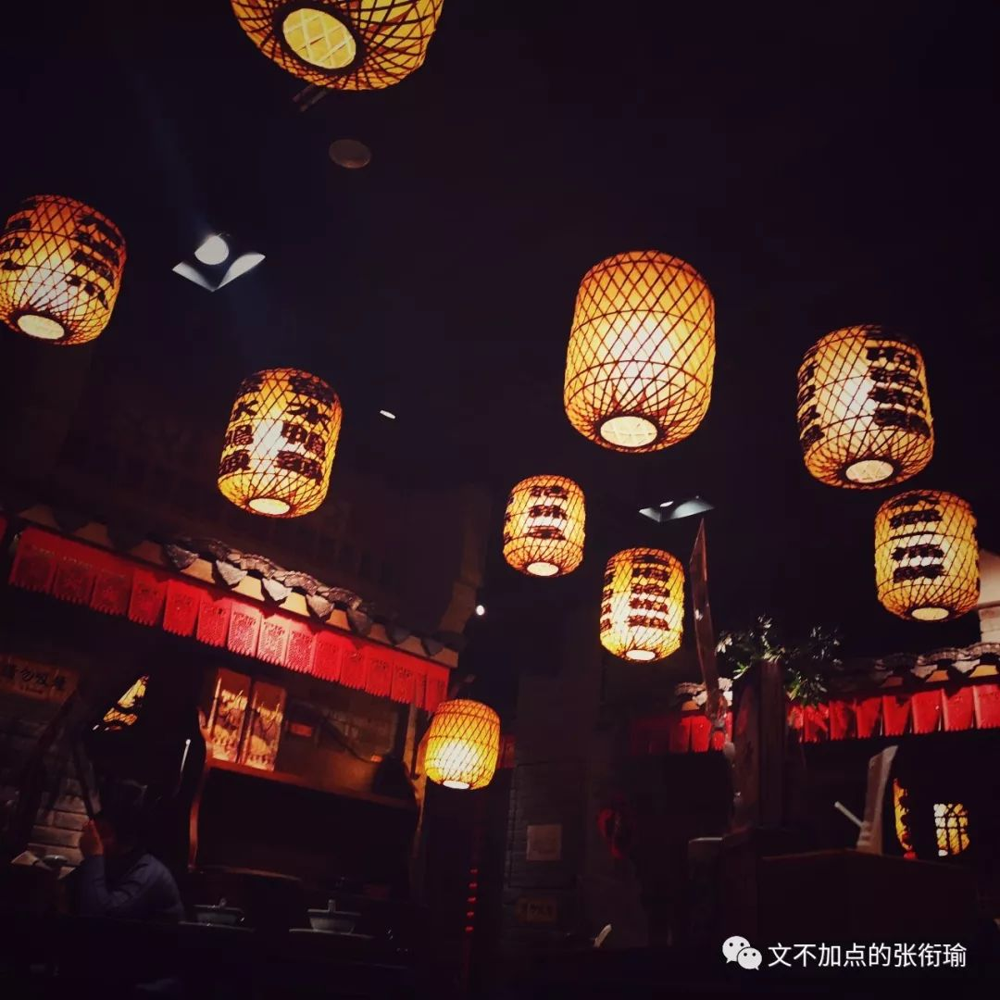
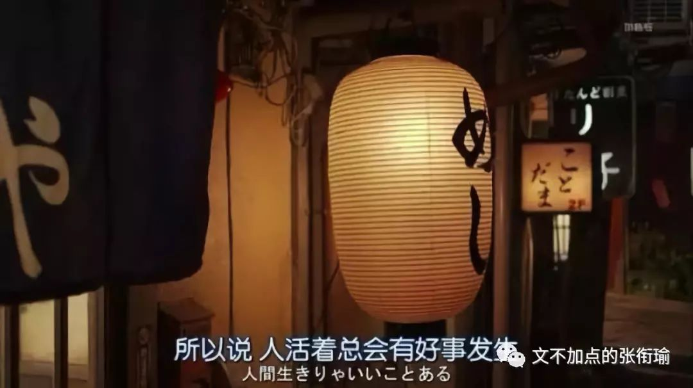
这家的阳春面有真实地令人感到惊艳 虽然一般地来说
去到这样的地方都是吃一些极尽反复或者仪式做作地吃着奇怪但大家都说好实际上很令人倒胃口的东西 但阳春面不会 是真实地在用心调取酱料

一般点餐也就是这样想着 去到一家新店里 点到素有定评的菜式选好兜底 虽然可能有些平常但是在哪一家都不会错的 尔后选一点自己想吃的还有店家的招牌菜 这一步也许才是真是的意图 不管是来测评还是就自己玩着high 最后是一些也许不起眼但经常给人惊艳的仿佛隐藏菜单
/说这一家整体就很适合在身体不舒服的时候来 每一样做出来给人的感觉都是可端给喜食清淡的老爷爷老奶奶 他们也不会有什么多话而开开心心吃掉的才是 我修了一下古法糖芋苗 王府泡椒鸡和 以及我们随缘点的小黄鱼 吃起来的感觉是干净而清爽

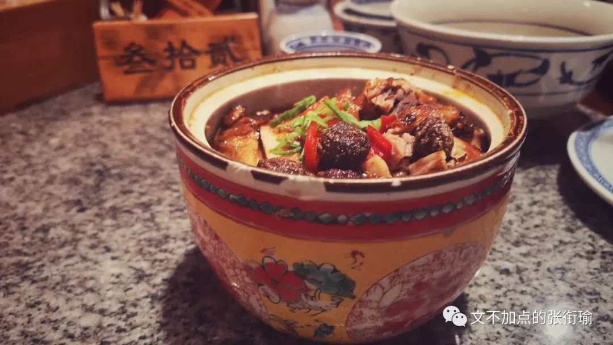
晚上班聚之后 因为大家要看闪灵所以我觉得怕了（其实是看多了沙雕图怕中途大家都觉得可怕的时候我突然想到沙雕图然后笑场 那样也太破坏恐怖片气氛了吧！！！
就比如这个样子

于是和轻度？沙雕图病患Amber一起出去爬楼 日常跑去拍光谷的这个点 在基科 很多开始尝试爬楼尬图的第一个点都在这里 一方面是离学校很近 另一方面所看到的也有一些 光谷广场唯一值得称道的也就仅仅在于此了 偏偏也是在堵车的时候才能流出最好看的光 那么堵车的唯一作用也就在于此了（笑
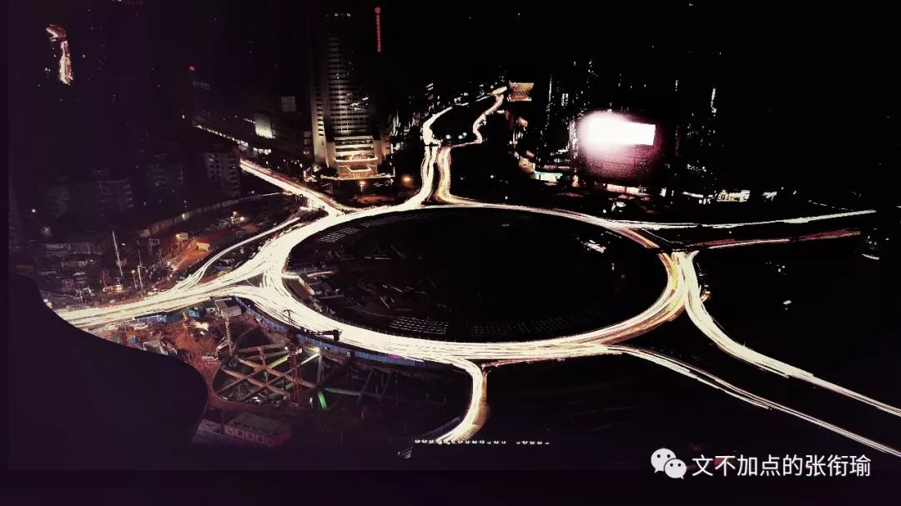
找楼的办法也是这样 先想想大概要拍什么 然后环顾四周哪栋楼最高or使用高德的俯视角度 定位到了楼房就可以考虑怎么上去了 居民楼相对而言比较容易就假装是访客 一些地方会有需要对应楼层才能刷去的电梯比如宾馆酒店 这时候就比较难受了 当然如果想贸然进入军管区域 请直接自首以请求宽大处理
在这个角度上 最坏的是一点钟方向光谷国际广场的广告牌一直在闪亮着光污染 实在是令人糟心至极 很多次都想给摄协说一声看能不能大家众筹一下去买那块广告牌三分钟就只是单纯地把ta关掉然后我们好好拍图 不过摄协的朋友我也不是很熟 众筹也大概只出得起一杯奶茶的钱
跑到对面的楼顶去 跑到一个不会出现这样沙雕光污染的地方去 兜兜转转 在奇怪而一致的库房里 当时没有拍下眼前的样子 是因为手机的光要一直打开照着向前的路
对于任何一栋新的楼 讲道理谁都没有任何的把握这栋楼是否能够上得去 Amber可能是故意要来制造气氛的吧 戴着遮住了模样的口罩 令人怀疑和我一起的到底是不是Amber（虽然实际上只是武汉现在的天气骑车在路上仿佛会冻伤脸（/就曾因此而面瘫过？
在库房和库房之间找路 只知道楼顶一定是在向上的最高 但并不知道应该怎么走 回廊又是回廊 曲折向前 在拐角处没有了光 小剧场在每一次拐过去和开门的时候 变得格外地强烈 求生之路的时候就会感觉在每一个开门的瞬间都会有一万只丧尸跳出来boomer
终于是到楼顶了呢~ 手肘抵在围墙上 手腕卡到铁丝边 深吸一口气然后开始举着手机做light painting 没带稳定器出来就纯粹靠手稳惹…… 如此证明自己prprpr
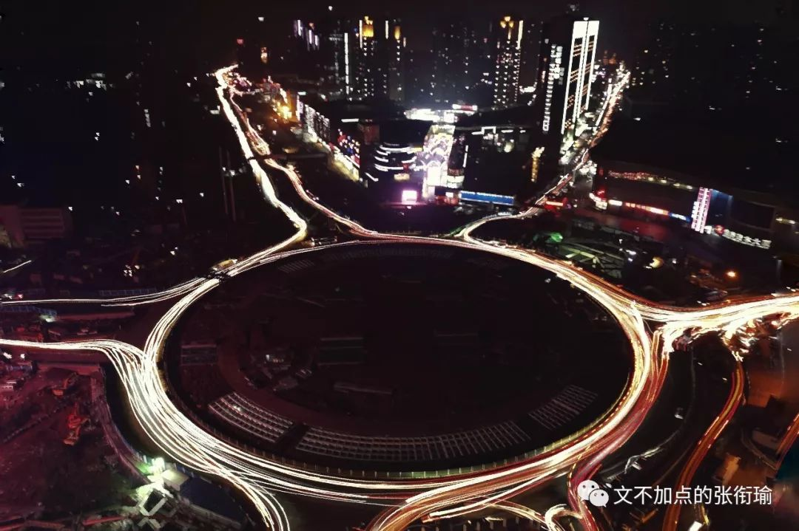
流光 我以为是把时间流成果冻 像一团凝胶 把眼前的之前的看到的一股脑地堆栈到同一张图里边了去 锁是被钥匙才打开了的门 流光是被奔波延展了的城市 和朋友说 在被生活奴役的时候需要一顿完颜阿骨打朋友回说 和沙雕相处的办法只需要煲一碗耶律阿保鸡 我以为是再恰切不过了的

14号 也就是昨天 再度出门了去
大致目的 是去往汉口的多牛世界
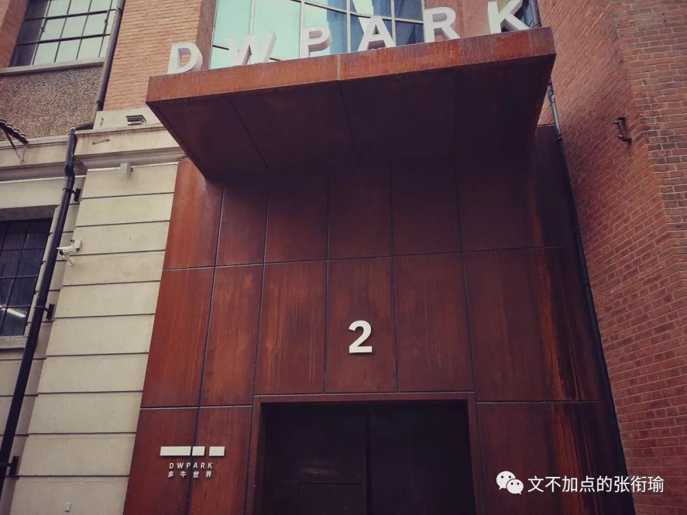
据说有声音展览在那边的平和打包厂旧址里 慢慢悠悠晃过去之后 只觉得到处是未经开发完全的 像毛坯房一样的地方 和来时的街角里待拆的旧式建筑仿佛分别在了这样土木力学结构的生命开始与结尾

我有想过把这一部分的图都用noir修成黑白的色调了去 像是更久远的时间里 一片因循过往云烟之后递送出来的一张明信片 纯粹的光影效果吗 不 我以为是建筑在倾诉呢喃

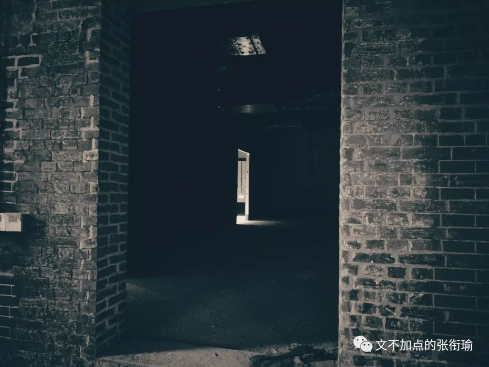

虽然是未写完的不具名 但并不意味着是真正的太初 门禁 指示 通风的管道和走网线电线水管线的地方 已经全部修整完毕 这才像是真正的非破坏性建设呀 在务工的时候先把所有的基础设施从力学结构到内部管路全都设计完毕
走通完毕 然后再开始进行装潢修饰

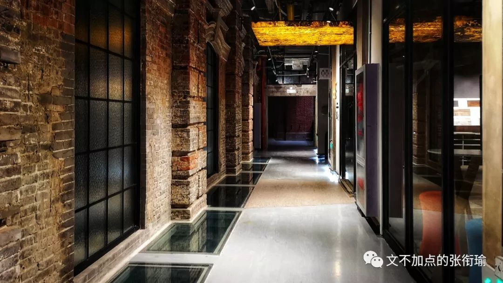

时间 给建筑以烟火的气息 走着来去 惊讶于整一栋建筑都仿佛是展览 而我们原本所想去的未策展完成的那一个 也就显得并不那么重要也并不觉得有什么了
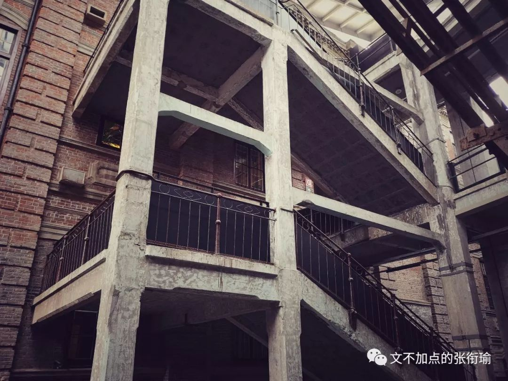
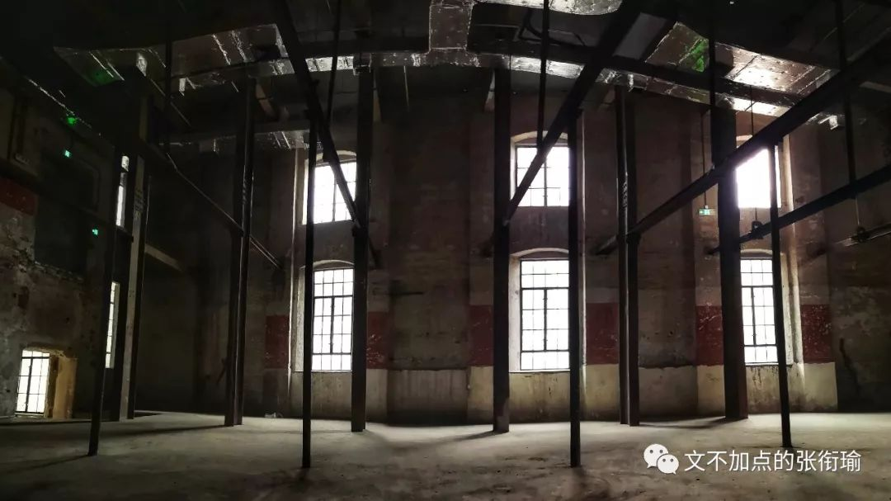

像探险一般地走走停停
随手把自己的伞放在角落上

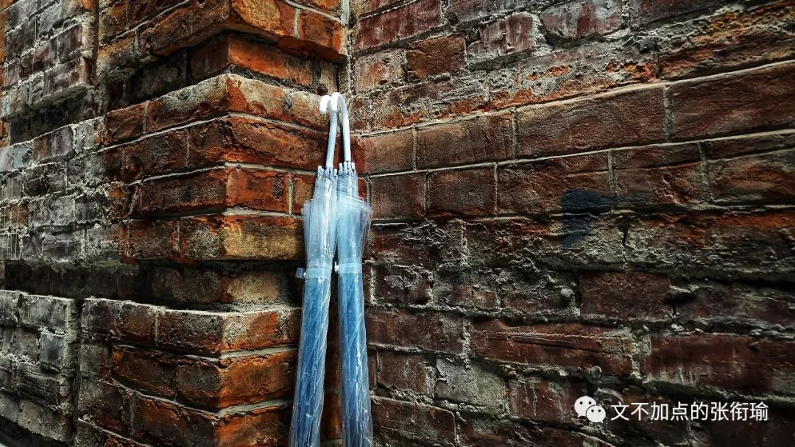
一层层地走过
顶楼上是鹅社书店
种草很久了
不曾想在这里发现

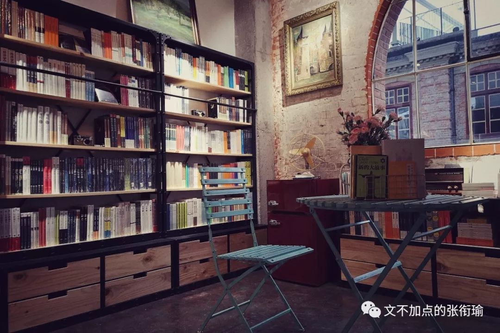
书店总是令人安心的地方
光是看看书名想想也很有意思
不过这一家应该没有很专心地在卖书
大概只是传媒公司的门楣
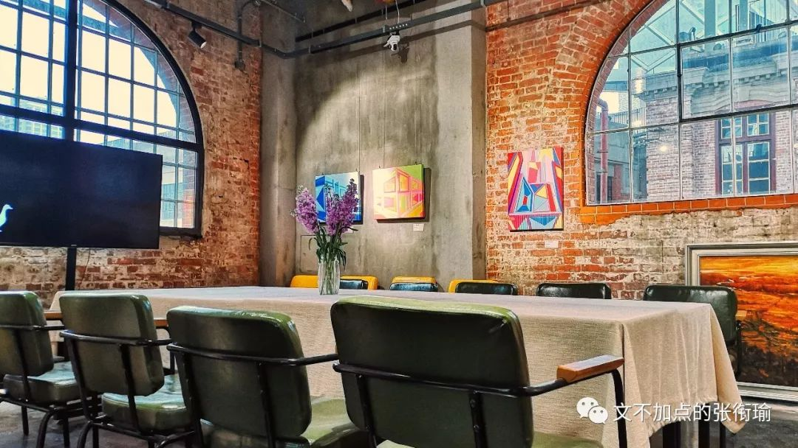

我似乎对
镜头中要表现文字的时候
特别感冒
就像看到的这样
虽然并不知道
自己为什么会这么想
这么做


一天都在下雨呢
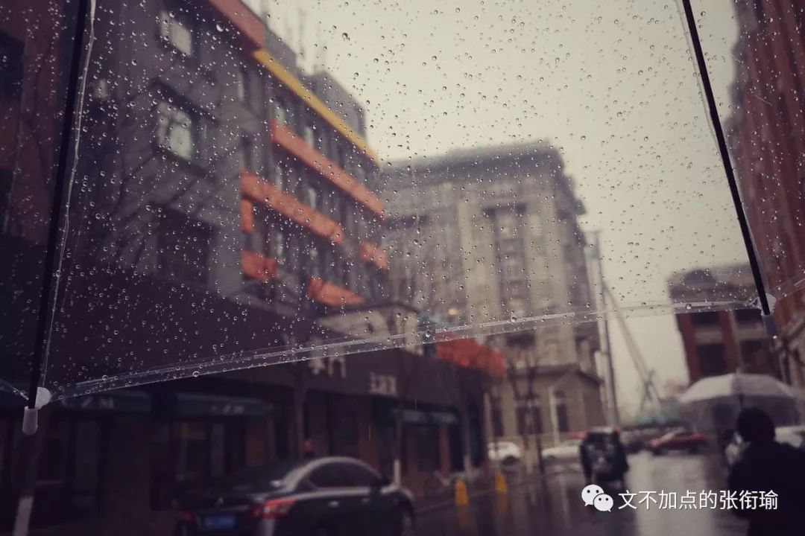
看来还是室内的生活比较适合
比如吃到这一碗 上次给朋友似鸟安利的时候说的是这家糖水店喝到会让人感觉到初恋的味道 还好她没有像我的另一位朋友朕 好奇地问我初恋是什么味道的 还是请去这一家好好在点了主食之外吃到桃胶牛奶西米捞双皮奶姜撞奶椰蓉牛奶砖吧

顺便随手安利支撑我度过晚上编程时光的日式炸鸡和天妇罗寿司
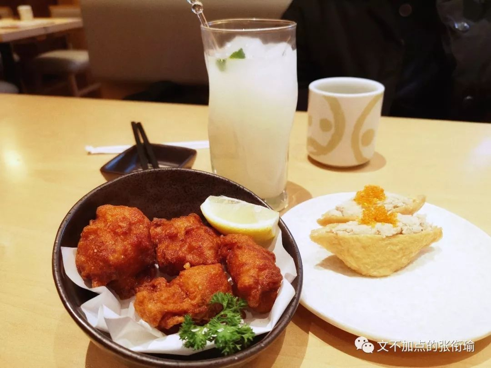

终于遇到能像四重奏里边一样 给出了炸鸡之后 能在上面挤上柠檬汁的店家 cuz挤过柠檬汁后不仅仅是柠檬的香味还会留在手上 炸鸡外表原本酥硬的皮壳也因为柠檬汁而软化了变得风味清新很多了吧 在吃到炸鸡的油腻里边 正是需要这样的食味来调剂个中（被孤独的美食家带得吃东西的时候脑内各种剧场hhh

除开吃喝玩的时间 依旧是像社畜一样 每天做着该做的事
虽然考完了理论上说着这应该是假期的里边 可还是要更加油一点做一点需要做的事吧 玩起来真的会有是很开心很开心的 也很放松在之中 但回来之后只要一想到会长胖 不对 有那么多事情要去做 就应该还是要再在电脑前打开编译器或者是office做一点什么事情了
野兽是个不怎么清醒的剧 就算是第一集 也让我断断续续看了五六次才看完
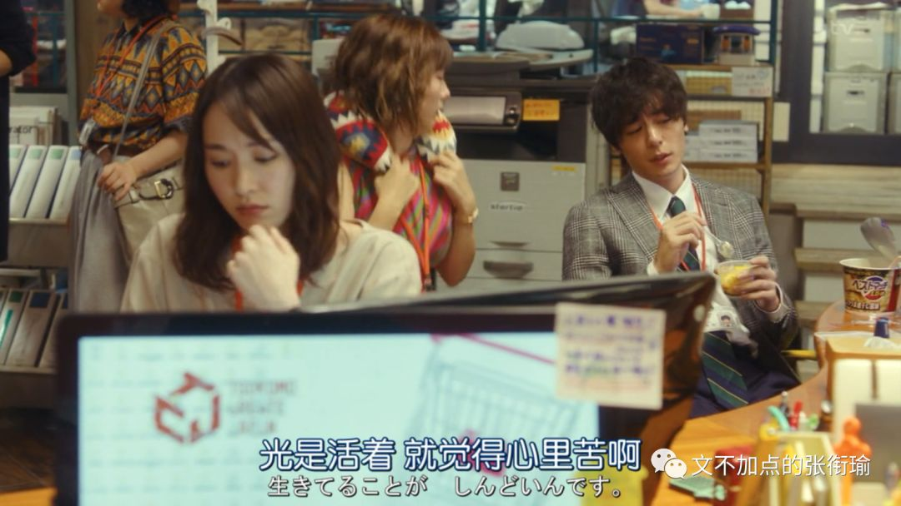
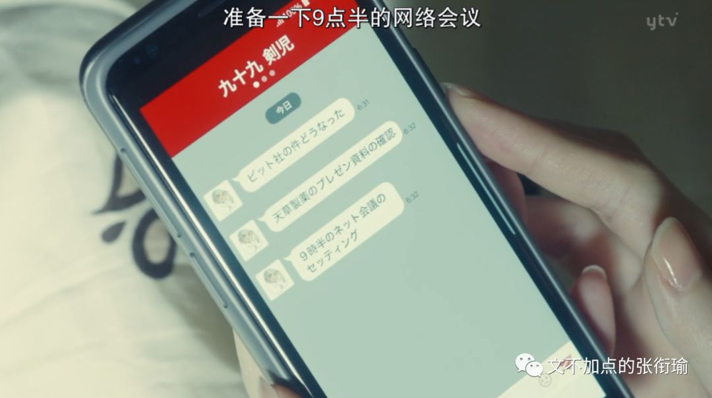
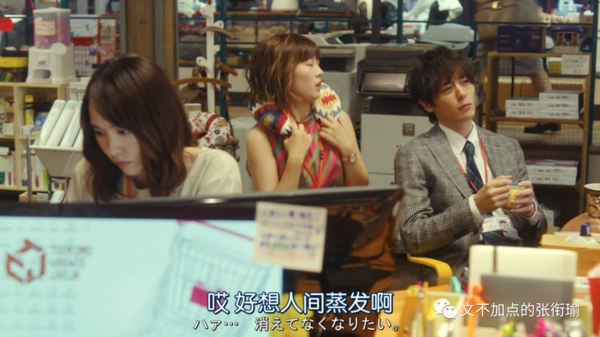
那么 希望可以像我的vx新头像一样了